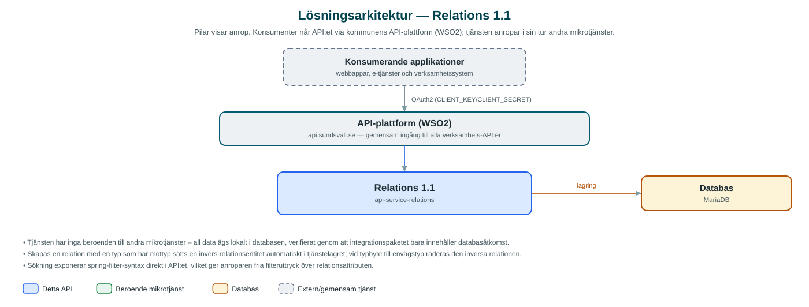

Relations
Håller reda på relationer mellan objekt i olika verksamhetssystem, till exempel kopplingar mellan ärenden, så att applikationer kan länka samman resurser utan egna kopplingstabeller.
Om API:et
Relations lagrar riktade kopplingar mellan två objekt som identifieras med externa id:n, källsystem och typ. Ett typiskt användningsfall är att koppla ihop ärenden som hör samman i olika ärendehanteringssystem, utan att systemen behöver känna till varandra.
Relationstyperna administreras via ett eget CRUD-gränssnitt och kan definieras med en mottyp (counter type). När en relation skapas med en typ som har en mottyp skapas automatiskt den inversa relationen, så att kopplingen kan hittas från båda hållen.
Relationer kan sökas fram med fritt komponerade filteruttryck (spring-filter-syntax) i kombination med paginering och sortering, vilket gör det enkelt att hämta alla relationer för ett visst objekt eller källsystem.
Det här gör API:et
- Relationer mellan objekt – Skapa, hämta, uppdatera och ta bort relationer mellan två resurser som identifieras med externt id, källsystem och typ.
- Administrerbara relationstyper – Relationstyper med visningsnamn och valfri mottyp hanteras via ett eget CRUD-gränssnitt.
- Automatisk invers relation – För tvåvägstyper skapas den omvända relationen automatiskt; byts typen till en envägstyp tas den inversa relationen bort.
- Flexibel sökning – Filtrering med spring-filter-uttryck samt paginering och sortering vid sökning av relationer.
API-dokumentation
API:ets samtliga resurser, parametrar och datamodeller finns beskrivna i en OpenAPI-specifikation som är hämtad ur källkodsförrådet. Den kan utforskas interaktivt i Swagger UI eller laddas ner som YAML. Programvaruförteckningen (SBOM) listar tjänstens samtliga tredjepartskomponenter med version och licens.
Teknisk dokumentation
Nedan beskrivs hur tjänsten är uppbyggd, vilka andra tjänster den anropar och vad som krävs för att driftsätta den. Informationen är härledd ur källkoden och dess konfiguration på GitHub.
Arkitektur

API:et är en mikrotjänst (Java 25, Spring Boot via kommunens gemensamma tjänsteplattform dept44 (8.0.8), byggd med Maven). Konsumenter når tjänsten via kommunens gemensamma API-plattform (WSO2) på api.sundsvall.se – tjänsten anropas aldrig direkt. Lagring: MariaDB med Flyway-migrationer; relationer och relationstyper lagras per kommun.
Teknikstack
- Språk: Java 25
- Ramverk: Spring Boot via kommunens gemensamma tjänsteplattform dept44 (8.0.8), byggd med Maven
- Databas: MariaDB med Flyway-migrationer; relationer och relationstyper lagras per kommun
- Övrigt: spring-filter (turkraft) för dynamiska sökfilter, JPA/Hibernate
Beroenden till andra mikrotjänster
Inga anrop till andra mikrotjänster hittades i källkodens konfiguration.
Programvaruförteckning
Tjänsten bygger på 234 tredjepartskomponenter fördelade på 13 olika licenser. Till skillnad från tabellen ovan, som listar andra mikrotjänster, avses här de programbibliotek som ingår i bygget. Se programvaruförteckningen för hela listan.
Konfiguration och driftsättning
- MariaDB-anslutning via spring.datasource; databasschemat versionshanteras med Flyway
- Flyway är avstängt i standardkonfigurationen och aktiveras per miljö
- Anrop görs per kommun – municipalityId ingår i alla API-vägar
Noterbart ur källkoden
- Tjänsten har inga beroenden till andra mikrotjänster – all data ägs lokalt i databasen, verifierat genom att integrationspaketet bara innehåller databasåtkomst.
- Skapas en relation med en typ som har mottyp sätts en invers relationsentitet automatiskt i tjänstelagret; vid typbyte till envägstyp raderas den inversa relationen.
- Sökning exponerar spring-filter-syntax direkt i API:et, vilket ger anroparen fria filteruttryck över relationsattributen.
Källkod
Källkoden är öppen och finns hos Sundsvalls kommun på GitHub. I källkodsförrådet finns även instruktioner för att klona, konfigurera och starta tjänsten i egen miljö.